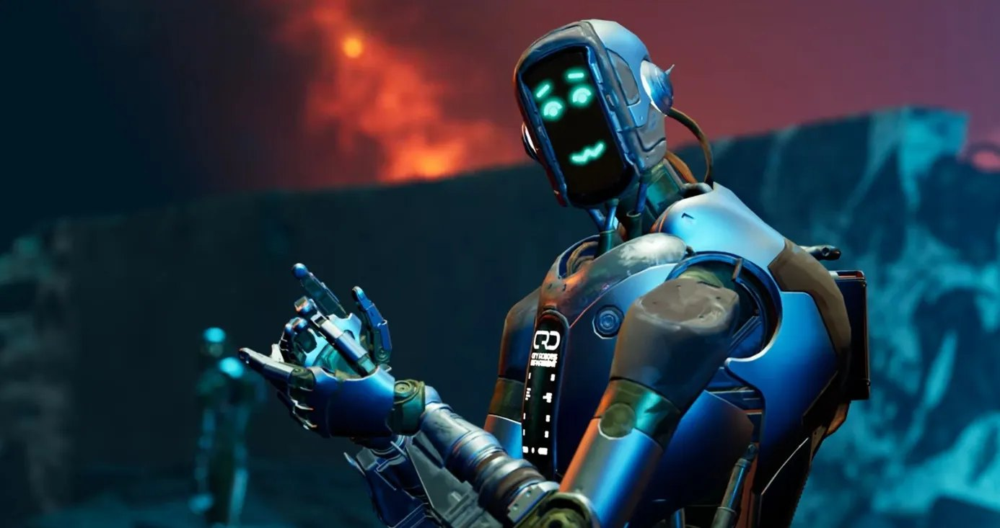
Oggi va di moda vantarsi dei propri successi con l'AI, anche se l'unica cosa che avete fatto è integrare la correzione dei pixel nelle texture, lavoro che prima toccava all'artista junior: un lavoro tranquillo, tra l'altro, e l'artista lo fa ancora meglio e più in fretta del modellino, ma i tempi impongono di togliere di mezzo il junior Vasja e prendere quel genietto di Claudio. E qui nasce una sensazione piuttosto strana… se le reti neurali hanno già imparato a riconoscere immagini, generare testo e musica, guidare automobili, giocare a complessi giochi geopolitici e risolvere un'enorme quantità di problemi che fino a poco fa erano considerati esclusivamente umani, cosa ci costa lanciare un modellino in un gioco moderno e affidargli il controllo di un NPC, per renderlo più vivo e più integrato nella lore?
Ma poi entrate in un gioco supermoderno (Pragmata, PUBG, scegliete voi) e salta fuori all'improvviso che lì dentro ci sono ancora i buoni vecchi automi a stati finiti, i Behavior Tree (alberi di comportamento), le euristiche e una tonnellata di if che dicono all'NPC che se il giocatore è abbastanza vicino bisogna attaccarlo, se il giocatore è scappato bisogna cercarlo un po', poi urlare un po', poi …scegliete voi…, e se lo si cerca troppo a lungo conviene far finta di non aver notato proprio niente e tornare alle proprie faccende da NPC, sorvegliando virilmente il forziere del loot dagli sguardi sfrontati della fauna locale, che tra l'altro gira anche lei a euristiche.
E tutto questo succede in progetti AAA moderni, dove centinaia di thread lavorano al rendering di un singolo frame, la fisica viene calcolata su più livelli di dettaglio, l'animazione usa sistemi di blending complicatissimi e procedural animation, la navigazione si basa su grafi enormi, e gli sviluppatori usano tranquillamente il ML per singole parti della pipeline grafica, per l'elaborazione audio o per la generazione di contenuti. Ma quando si arriva alla domanda «cosa deve fare adesso questo specifico NPC», all'improvviso si scopre che il vecchio switch sugli stati è ancora la soluzione ingegneristica migliore.
Sembra strano, se guardate la situazione con gli occhi di chi è stordito dall'hype intorno al ML ed è abituato a pensare che qualunque comportamento abbastanza complesso prima o poi vada affidato a una rete neurale: se sappiamo già addestrare modelli a giocare ai videogiochi a livello umano, perché non prendere l'ennesimo soldato, dargli un insieme di azioni possibili e lasciargli capire da solo quando sparare, ritirarsi o cercare copertura? Vi svelo un piccolo segreto: in uno dei progetti recenti ci abbiamo persino provato, e sapete cosa è successo… dopo qualche ciclo di fine-tuning gli NPC hanno smesso di fare teatro per il giocatore.
Eppure sulla carta sembrava tutto abbastanza promettente, perché il ciclo di gioco di un normale NPC ricorda davvero il RML: c'è uno stato del mondo circostante, c'è un insieme di azioni, dopo ogni azione lo stato cambia, e c'è una ricompensa che deve dire al sistema quanto bene si è comportato. Poi lanciamo l'addestramento e aspettiamo il momento in cui l'agente trova una strategia che massimizza la ricompensa ottenuta. Non funziona… come ho già detto sopra.
Non funziona perché lo sviluppo di videogiochi ha una caratteristica sgradevole che tutti dimenticano: l'AI di gioco non deve affatto essere «algoritmicamente intelligente», deve essere «comportamentalmente umana». È un termine del game design, non provate a descriverlo con la matematica, tanto non ci riuscirete. Anzi, più l'NPC diventa intelligente, peggiore diventa il gioco, e sparisce la sensazione che il mondo giri intorno al giocatore.
Immaginate una situazione qualunque: il giocatore entra in una stanza, un nemico lo nota, inizia lo scontro a fuoco, il giocatore si ritira dietro l'angolo, l'NPC lo segue, il giocatore continua ad arretrare, l'NPC continua l'inseguimento, poi il giocatore svolta nel corridoio accanto e prova di nuovo a seminarlo, e il nemico per tutto il tempo continua a cercare il bersaglio. Perché, dal punto di vista del ML e delle informazioni che ha a disposizione, il giocatore è ancora da qualche parte lì vicino: qualcuno ti è entrato in casa e ha fatto casino, quindi è ragionevole continuare a inseguirlo.
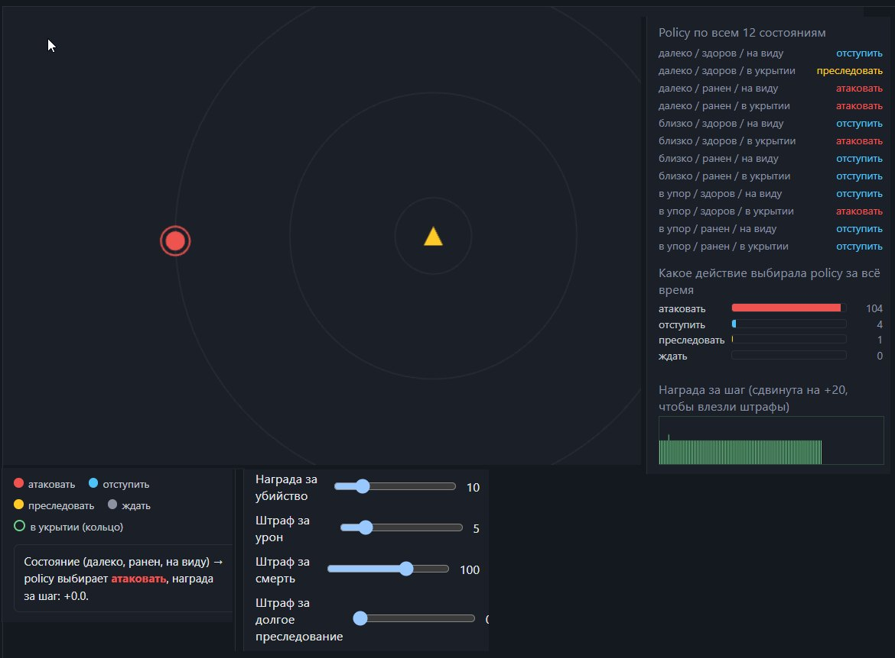
Poi infiliamo questo modello nel gioco, e il giocatore, dopo essersi imbattuto in qualche NPC del genere, capisce che il nemico lo inseguirà all'infinito, smette di vederlo come un avversario da combattere e comincia a vederlo come un sistema il cui comportamento si può exploitare. Si allontana alla distanza giusta, aspetta che l'NPC finisca in una posizione comoda e usa contro di lui la prevedibilità del suo stesso comportamento.
Cosa fa il designer? Mette un timer sulla durata dell'inseguimento, così dopo trenta secondi il nemico smette di inseguire e torna indietro. E non importa affatto se l'NPC abbia davvero perso il giocatore, quanto sia probabile che il giocatore si trovi ancora nella stanza accanto, quanto bene il sistema di percezione possa ricostruirne la posizione e quanto sarebbe logico, per una persona reale, continuare a cercare.
Il compito del designer sta proprio su un altro piano: non modella il comportamento di un soldato nel mondo reale, ma cerca di costruire una sequenza di eventi che sia interessante per la persona seduta davanti allo schermo. Ricordate che il gioco è un teatro per un solo spettatore: ci tornerò sopra più di una volta.
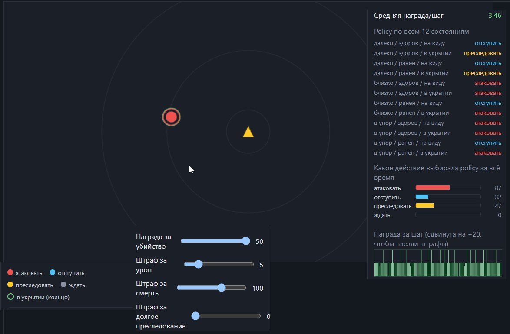
Quando scriviamo un programma normale, basta formulare con chiarezza cosa significa risultato corretto e tradurlo in un algoritmo; in un gioco invece il risultato corretto spesso non si può nemmeno definire, perché ci interessa non solo cosa ha fatto il computer, ma anche cosa ha provato il giocatore nel frattempo.
Se l'NPC ha perso lo scontro, può essere un cattivo risultato, perché l'AI si è rivelata troppo debole, oppure un risultato ottimo, perché il giocatore dopo venti tentativi ha finalmente imparato a leggerne gli attacchi e si è sentito migliorato e più «furbo» del gioco (si chiama effetto della vittoria rimandata). Potrebbero farvi morire apposta le prime volte, con qualunque arma potente stiate combattendo, e rispedirvi al respawn, oppure al contrario abbassare gradualmente la potenza del boss a ogni reload, solo che... sst... io non vi ho detto niente, sono solo pensieri ad alta voce.
Se l'NPC ha ucciso il giocatore, può significare che l'AI di gioco ha svolto perfettamente il suo compito, oppure che il designer ha sbagliato il bilanciamento e il giocatore semplicemente non ha avuto la possibilità di vincere. Adesso vogliamo insegnare tutto questo a una rete neurale: e come pensiamo esattamente di scrivere il divertimento del giocatore in una funzione di ricompensa?
La funzione di ricompensa
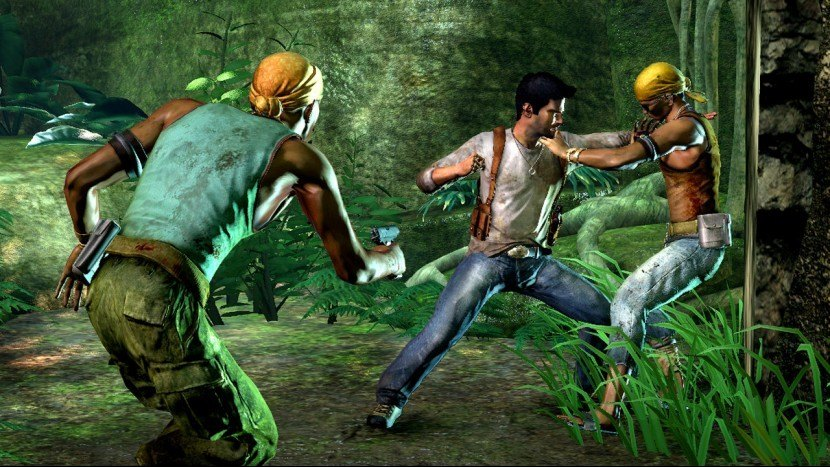
Mettiamo che alla fine abbiamo deciso di addestrare il nostro nemico con il RML e siamo partiti da una funzione così: dieci punti per l'uccisione del giocatore, meno cinque per il danno subito e meno cento per la propria morte. Cioè abbiamo mostrato alla rete neurale che deve uccidere il giocatore cercando nel frattempo di non morire.
E il modello trova una strategia: conviene molto di più non uscire mai dalla copertura piuttosto che rischiare di prendere danno. E gli NPC passano tutta la partita a imboscarsi negli angoli, perché dal punto di vista della funzione data è una strategia niente male; ecco... vi divertirebbe giocare a una cosa del genere?
Va bene, alziamo il parametro dell'uccisione del giocatore, che comincia a dare una ricompensa talmente grande che le altre penalità diventano irrilevanti, e a ciò che è irrilevante, come ricorderete, si smette di badare. Ora gli NPC iniziano a comportarsi in modo follemente aggressivo, perché è proprio questo che risulta matematicamente ottimale.
Allora aggiungiamo una penalità per l'inseguimento troppo lungo, e il modello rinuncia del tutto a cercare il giocatore, perché dopo qualche addestramento la ricompensa potenziale non ripaga più il rischio. Alla fine il comportamento ottenuto nel suo complesso non ci piace, e cominciamo a cambiare i pesi, aggiungere condizioni, introdurre nuove ricompense, cambiare i coefficienti e rilanciare l'addestramento, e dopo un po' quasi inevitabilmente scopriamo che correggere una situazione ne influenza diverse altre, perché il modello non conosce le nostre intenzioni e non capisce cosa esattamente consideravamo un effetto collaterale: cerca semplicemente la strategia più vantaggiosa nello spazio che gli abbiamo messo a disposizione.
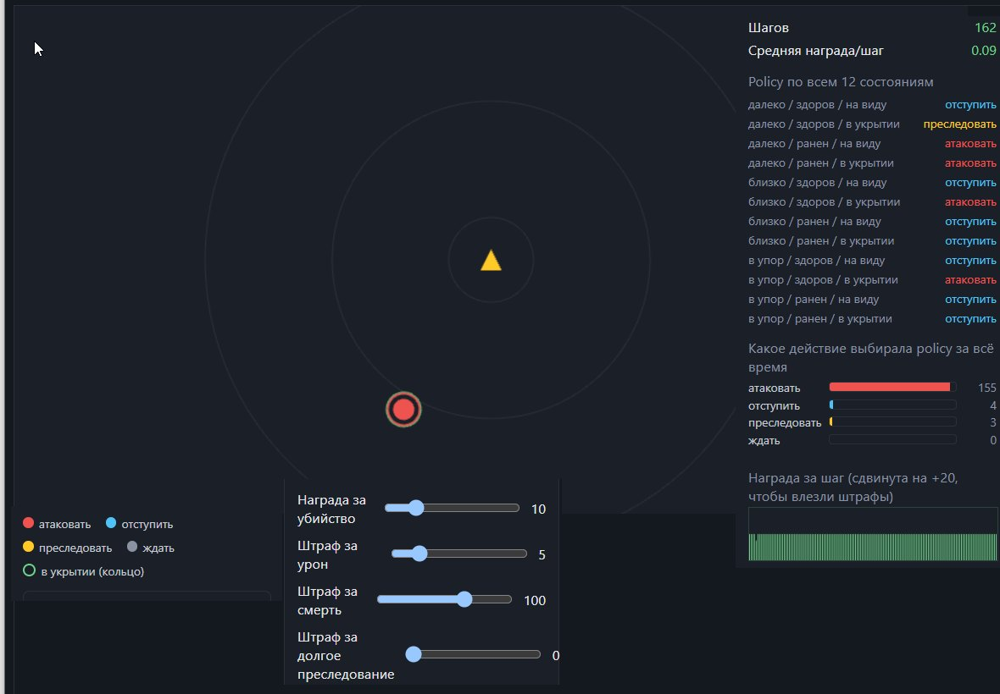
Possiamo, certo, continuare a perfezionare la funzione di ricompensa, ma questo ci trascina pian piano in un circolo vizioso, e più dettagli aggiungiamo alla funzione di valutazione, più comincia ad assomigliare al tentativo di descrivere l'intero game design con un prompt gigantesco. A un certo punto nasce una domanda del tutto legittima: ma perché mai stiamo cercando di costringere una rete neurale a ricavare regole che conosciamo già e che potremmo scrivere direttamente nel codice?
Se il designer dice che l'NPC deve smettere di inseguire il giocatore dopo trenta secondi, non abbiamo nessun motivo particolare per costringere il modello a scoprire da solo questa regola con l'addestramento: possiamo semplicemente scrivere.
if (timeSinceLostPlayer > 30.0f)
returnToPost();Profit... i nostri NPC hanno cominciato a comportarsi in modo sensato e prevedibile. E dopo aver rimesso nel codice una decina di controlli del genere, capite che l'«AI stupida» è una parte del game design assolutamente sensata.
Il gioco cambia
Va bene, qualcuno con una decisione d'imperio ha infilato nel gioco questa povera rete neurale, sepolta sotto un prompt lungo un chilometro. Poi arriva il designer e vuole che il nemico sia più aggressivo, poi arriva il level designer e dice che bisogna tenere conto della velocità di movimento del giocatore, dopo una settimana il weapon designer aggiunge un nuovo cannone e bisogna tenerne conto anche lui nel prompt, poi aggiungono il sistema delle coperture (del sistema delle coperture ho già scritto, se vi interessa), poi compare un nuovo tipo di nemico che deve lavorare insieme a quello vecchio, poi salta fuori che su una delle mappe gli NPC si incastrano troppo spesso nei passaggi. Dopo i playtest torna il primo designer e dice che il nemico sembra troppo prevedibile e bisogna cambiare leggermente il suo comportamento. Leggermente, accidenti... hai visto cosa abbiamo combinato qui in questo mese? Ed è uno sviluppo assolutamente normale, di tutti i giorni.
In questo senso Behavior Tree, FSM o Utility AI sembrano candidi, comprensibili e morbidosi, e offrono una comoda interfaccia tra programmatore e designer, perché al designer importa vedere non solo il risultato del sistema, e al programmatore capire perché in questo momento ha scelto proprio quel comportamento.
Quando hai davanti un albero di comportamento, puoi aprirlo, imprecare contro la goffaggine del designer e contro gli spaghetti di nodi, ma poi scorrerlo dall'alto in basso e vedere che l'NPC prima verifica se può attaccare, poi cerca di mettersi in copertura, dopodiché, se il bersaglio è perso, avvia la ricerca e solo alla fine torna a pattugliare.
Se serve, si può aggiungere una nuova condizione, riordinare le priorità, cambiare il tempo di attesa, modificare il raggio di ricerca o disattivare del tutto un pezzo di comportamento, e il risultato si può verificare subito. E qui si vede bene perché una buona AI di gioco non deve essere semplicemente un sistema RML capace di prendere decisioni, ma uno strumento che si regola con cursori e config, non con un prompt.
E adesso ditemi: come funzionano i modelli ML moderni? Anche se per un attimo dimentichiamo la comodità di sviluppo e immaginiamo di avere già, per qualche miracolo, una rete neurale perfetta, capace di analizzare quasi istantaneamente lo stato del mondo di gioco e scegliere l'azione ottimale, il problema dei cursori non sparisce.
Otterremo davvero un ottimo algoritmo decisionale, ma non necessariamente un buon avversario. Vi ritrovate con un NPC capace di vedere il giocatore in qualunque punto del livello, che conosce alla perfezione la gittata della sua arma, sceglie all'istante la copertura ottimale e capisce benissimo quando attaccare, quando ritirarsi e quando chiamare rinforzi. È venuto fuori un ottimo... cosa, un boss? Ma allora sorge la domanda: e come lo si batte? Siete venuti a giocare per prenderle di continuo o per darle dopo una giornata di lavoro?
Se l'NPC ogni volta sceglie una posizione da cui il giocatore non può raggiungerlo, non fa mai un movimento di troppo, reagisce all'istante a ogni azione del giocatore e usa sempre l'attacco più efficace, il giocatore non riuscirà a imparare a vincere, perché morirà e basta. Una decina di «vittorie» del genere e il vostro gioco finisce nel cestino come truccato e impossibile da finire, perché ce ne sono altri dieci mai giocati che aspettano nel backlog.
Ed è per questo che gli sviluppatori fanno all'«AI di gioco» cose piuttosto strane, che da fuori sembrano un degrado del sistema. Le limitano il campo visivo, aggiungono ritardi, le vietano di usare certe abilità troppo spesso, riducono la precisione, introducono i «cooldown delle abilità», costringono il nemico a cambiare posizione senza un motivo particolare e lasciano apposta al giocatore la possibilità di attaccare.
Se guardate tutto questo con gli occhi di chi cerca di costruire l'agente autonomo più efficiente possibile, sembra quasi un peggioramento deliberato dell'algoritmo. Non guardate il gioco da ingegneri, guardatelo con gli occhi di un game designer che deve costruire un sistema di combattimento interessante. Al giocatore non serve un avversario matematicamente ottimale, ma un avversario il cui comportamento lasci abbastanza spazio per osservarlo, capirlo, anticiparlo e, alla fine, usare queste conoscenze per vincere. E vi riporto di nuovo al concetto di «teatro per un solo spettatore».
Anche la prevedibilità è game design
Cioè un'AI eccessivamente intelligente e imprevedibile risulta peggiore di una semplice e convenzionalmente stupida, per la quale il giocatore riesce a costruirsi in testa un proprio modello del mondo dietro lo schermo.
Prima nota che il nemico spara, poi dopo qualche scontro capisce che dopo un certo attacco l'NPC si ritira, poi si accorge che se si avvicina a una certa distanza il nemico passa al fucile a pompa, quindi scopre che se si mette dietro una copertura e sbuca in fretta dall'altro lato l'NPC cambia posizione, e dopo qualche ora di gioco tutto questo diventa una specie di regolamento interno che il giocatore comincia a usare in modo del tutto automatico. Si chiama «progressione della padronanza del giocatore», ai game designer la insegnano per quasi due anni... e molti comunque non la assimilano.
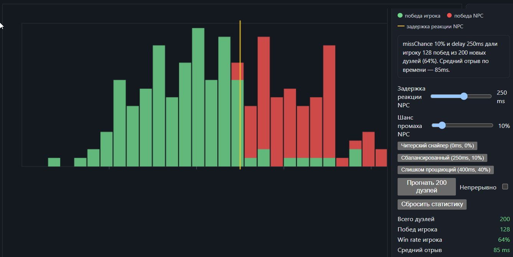
È in questo momento che nasce la «buona AI di gioco», il motivo per cui, in fondo, i giochi esistono: il giocatore smette di reagire semplicemente al sistema e comincia a capirlo, perché sa sia cosa succede adesso sia cosa succederà tra qualche secondo. Quindi può costruirsi in anticipo una strategia, oppure creare la situazione che gli serve, oppure costringere l'avversario a scegliere una certa azione e poi sfruttare il risultato di quella decisione a proprio vantaggio.
Ma se il comportamento dell'NPC resta ogni volta imprevedibile, per il giocatore diventa molto più difficile costruirsi questo modello, e al posto della sensazione di «padronanza» crescente subentra la stanchezza di dover tirare a indovinare ogni volta.
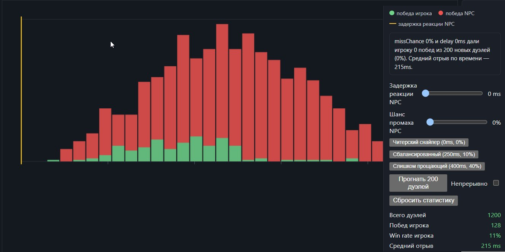
Per questo certe AI di gioco vengono fatte piuttosto limitate, e non significa necessariamente che gli sviluppatori siano pigri e non siano riusciti a farle più intelligenti. Ci sarebbero riusciti, ma queste limitazioni permettono al giocatore di vedere la struttura del comportamento dell'avversario, e senza questa struttura sparisce buona parte dello spazio per imparare, sperimentare e rendersi conto dei propri progressi. La maggior parte dei miei colleghi concorda sul fatto che un'AI troppo intelligente distrugge l'immersione, quel famoso «teatro per un solo spettatore».
L'NPC deve sbagliare
Questo è in generale uno dei problemi più interessanti dell'AI di gioco: scegliere bene il luogo e il momento in cui al sistema è permesso essere imperfetto. Una vista troppo scarsa irrita il giocatore e dà l'impressione di un gioco stupido, una vista troppo buona dà l'impressione che si bari, una reazione troppo lenta rende lo scontro noioso, una reazione istantanea fa sentire la persona inadeguata, posizioni scelte alla perfezione e un uso infallibile delle armi trasformano piuttosto in fretta qualunque nemico da sfida interessante in «gioco difficile».
Per questo all'NPC si lascia una certa probabilità di sbagliare: scegliere una copertura non ideale, restare troppo a lungo dietro un muro, non notare subito il movimento del giocatore o smettere di inseguirlo dopo 30 secondi. Ma questi errori non devono sembrare un guasto casuale, così che il giocatore li percepisca come una parte naturale del comportamento del personaggio.
E qui emerge una differenza piuttosto sottile tra stupidità casuale e debolezza controllata: quando un NPC ogni tanto fissa il muro o comincia a correre senza meta per la stanza, il giocatore decide quasi all'istante che il gioco è rotto; ma se il nemico a volte resta troppo a lungo dietro la copertura, non reagisce subito a uno sparo o si lascia aggirare, il giocatore può concludere in modo del tutto naturale di avergli trovato un punto debole e di poterlo sfruttare consapevolmente nello scontro successivo.
Dal punto di vista dell'implementazione interna questi due comportamenti possono essere separati da poche righe di codice, ma dal punto di vista dell'esperienza di gioco tra loro c'è un abisso, perché nel primo caso la persona scopre un errore dello sviluppatore, nel secondo trova una nuova regolarità del sistema di gioco, da studiare e sfruttare.
Dove i giochi usano il ML
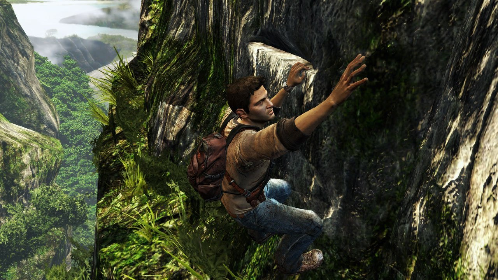
Si potrebbe pensare che il machine learning sia poco adatto ai giochi... non è così, o meglio non proprio, perché nei motori di gioco esiste un'enorme quantità di problemi in cui il ML si rivela uno strumento del tutto naturale e molto utile, solo che stanno un po' in disparte rispetto al «cervello» dell'NPC vero e proprio.
Abbiamo un'enorme quantità di dati di motion capture da ripulire, smussare, classificare o trasformare in una forma più comoda per l'uso successivo, ed è proprio qui che funziona benissimo un modello a cui si possono mostrare tanti buoni esempi lasciandogli imparare a riprodurre la trasformazione richiesta; ma la versione finale la ripulisce comunque una persona, si chiama «human touch».
Non importa granché perché il modello abbia deciso di cambiare un po' un certo frame dell'animazione, se dopo l'elaborazione il movimento sembra naturale e il personaggio smette di scattare. Lo stesso vale per la voce, l'elaborazione delle immagini, l'animazione facciale... e via dicendo.
Ma anche in questi compiti il ML non sostituisce del tutto gli algoritmi esistenti, e molto più interessante è la combinazione in cui il codice classico svolge il lavoro per cui le regole sono ben note e dove ci importa la prevedibilità, mentre il machine learning si usa dove formalizzare tutte quelle regole a mano sarebbe troppo costoso o praticamente impossibile.
E arriviamo finalmente al motivo principale per cui l'AI di gioco classica continua a vivere nell'epoca di Claude e ChatGPT e a consumare le energie dei game designer. Una rete neurale non ha alcun problema a prendere decisioni: non le costa nulla passare in rassegna un'enorme quantità di varianti, calcolare il costo di un percorso, valutare più candidati, scegliere il valore massimo o eseguire qualche migliaio di controlli in un frame; ma quando la domanda è se l'NPC, dieci secondi dopo aver perso il giocatore, debba continuare a cercarlo, nascondersi, tornare in posizione o smettere di inseguirlo perché in quel momento al giocatore interesserà di più andare avanti nel livello, non stiamo più descrivendo un problema tecnico, ma una visione di design.
E questa visione si traduce malissimo in un prompt o in una funzione di ricompensa, per cui tocca aggiungerci la durata dello scontro, la probabilità di morte del giocatore, la quantità di danno inflitto, il tempo passato nella zona di pericolo, la varietà degli attacchi usati, il numero di schivate riuscite e decine di altri parametri. A un certo punto questa funzione comincia a sembrare un GDD a parte, e sorge una domanda piuttosto naturale: ci serve davvero una rete neurale che cerchi di ricavare da questi numeri un comportamento che il designer conosce già?
Se sappiamo in anticipo che, dopo aver perso il giocatore, l'NPC deve cercarlo per venti secondi e poi tornare alla posizione di partenza, non ha molto senso costringere il sistema a scoprire da solo questa regolarità. Se sappiamo che il boss deve cambiare fase dopo aver perso una certa quantità di salute, questo passaggio non deve per forza essere il risultato di un ciclo di addestramento da milioni di iterazioni. Se sappiamo che l'avversario deve ogni tanto lasciare al giocatore una finestra per attaccare, quella finestra la si può inserire direttamente nel suo comportamento.
Qui non c'è nessuna sconfitta tecnologica, perché il designer o lo sviluppatore non è obbligato a usare la tecnologia più complessa disponibile quando è più adatto uno strumento più semplice.
Le vecchie tecnologie resteranno
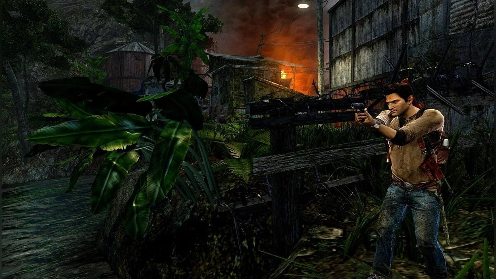
Quando guardi un motore di gioco moderno, scopri che la maggior parte delle tecnologie esiste da decenni e continua a convivere tranquillamente con i sistemi più moderni.
All'interno dello stesso progetto si possono trovare ECS, job system, fisica complessa, DLSS, streaming world e un'enorme quantità di sottosistemi asincroni, e accanto a loro ci sarà qualche vecchio automa a stati finiti che in sostanza guida ancora l'NPC e, dopo lo stato Chase, lo porta in Search, e dopo questo, se il bersaglio non è stato trovato, lo rimanda in Patrol.
FSM, Behavior Tree, Utility AI e i sistemi di scripting permettono di descrivere la visione del designer, che va realizzata in un gioco concreto, su una mappa concreta, in un contesto concreto, lasciandola al tempo stesso abbastanza trasparente per lo sviluppatore da poterla testare, bilanciare, debuggare e modificare insieme al resto del gioco.
Il machine learning risolve un altro problema e permette di cercare regolarità là dove descriverle a mano è troppo complicato, e il numero di varianti possibili è così grande che al programmatore costa molto meno fornire al sistema un'enorme quantità di esempi e lasciargli trovare da solo la soluzione adatta.
L'AI classica può stabilire che l'NPC adesso deve essere in modalità combattimento, il sistema di navigazione può trovare un percorso adatto verso la copertura, e un modello ML può essere usato da qualche parte all'interno del livello di animazione o di comportamento per scegliere un movimento più naturale, stimare la probabilità di un evento o selezionare automaticamente parametri che per il designer sarebbero difficili da calcolare.
Un approccio ibrido del genere sembra molto più naturale dell'idea di sostituire tutta l'AI di gioco con un'unica gigantesca rete neurale, perché l'AI di gioco raramente è un unico problema: è sempre fatta di tanti sottosistemi, ognuno con i propri compromessi tra qualità, prestazioni e costo di sviluppo.
Perché i giochi non usano il ML
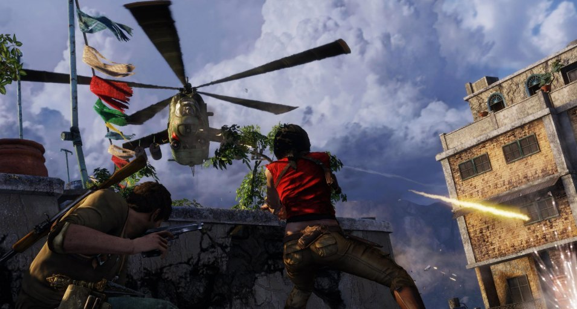
Sento spesso dire che i giochi sono all'avanguardia del progresso tecnologico: è vero e non è vero. Nello sviluppo le tecnologie non tanto si soppiantano a vicenda, quanto si aggiungono alla cassetta degli attrezzi comune, e il vecchio sistema continua a esistere finché risolve bene il suo compito specifico.
Se dobbiamo trovare un percorso sulla navmesh il più in fretta possibile, lì la rete neurale non vi serve. Se dobbiamo stabilire in che stato si trova l'NPC, si può usare una FSM e la rete neurale di nuovo non serve. Se bisogna descrivere comodamente e riordinare le priorità del comportamento, si può usare un Behavior Tree, e la rete neurale di nuovo non serve. Se bisogna scegliere un'azione sulla base di un gran numero di parametri, una Utility AI sarà più comoda di una rete neurale con i prompt. Se bisogna trovare automaticamente una regolarità in un'enorme mole di dati, ecco, qui sì che serve il machine learning... oppure possiamo mettere a giocare una folla di QA a spuntare caselle piace/non piace e ottenere quei dati comunque.
Sarebbe strano aspettarsi che l'arrivo delle reti neurali cancelli automaticamente tutti gli altri approcci, perché l'obiettivo finale dello sviluppo di giochi è costruire un sistema che va costretto a fare esattamente ciò che serve a quel gioco specifico, e a farlo in modo abbastanza rapido, stabile ed economico perché il team possa far crescere il progetto, correggere i bug e cambiare il design iniziale.
Se il designer sa con certezza che il soldato, dopo trenta secondi di inseguimento, deve smettere di cercare e tornare alla sua posizione, non c'è nulla di particolarmente moderno o superato nello scrivere semplicemente questa regola nel codice.
Se invece ci serve ottenere un movimento naturale del personaggio in decine di migliaia di situazioni diverse, impossibili da elencare a mano, o ricostruire una regolarità in un enorme insieme di dati che una persona da sola non è in grado di formalizzare, ecco che il machine learning comincia a essere utile.
E potrebbe benissimo darsi che il futuro dell'AI di gioco non abbia proprio niente a che fare con la sostituzione di tutte le FSM, i Behavior Tree e gli altri sistemi classici con un'unica rete neurale universale, ma piuttosto con l'imparare a combinare nel modo giusto approcci diversi, lasciando a programmatore e designer prevedibilità e controllo.
Ed è questo il paradosso dell'AI di gioco: vogliamo che il computer sappia prendere decisioni complesse, ma solo finché quelle decisioni restano parte di un mondo di gioco che possiamo capire, bilanciare e modificare. Il compito dello sviluppatore non è dimostrare che la macchina può essere intelligente, veloce e precisa, ma costruire un insieme di regole ed eccezioni in cui la persona davanti allo schermo resti il centro di quel mondo di gioco, e non una delle variabili di qualche equazione, anche se in effetti quella variabile lo è.
E la strada degli LLM-NPC?
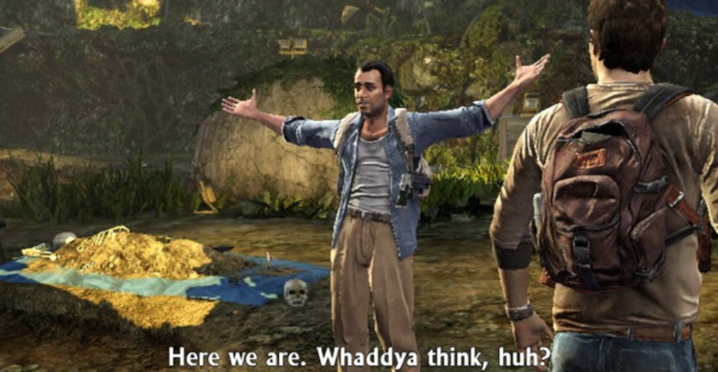
Va bene, dirà il lettore, tutto questo suona bello quando si parla di FSM e Behavior Tree, ma siamo nel 2026, e a tutte le conferenze girano demo in cui gli NPC parlano con il giocatore a voce, ricordano il dialogo precedente e sembrano «decidere» qualcosa da soli. È proprio così, e anch'io sono rimasto stupito da Inworld AI con quelli di Ubisoft e il loro progetto NEO NPC: c'è una base di conoscenza e uno stile di parlata del personaggio, e poi la magia dell'LLM trasforma il tutto in traccia audio e animazione facciale in tempo reale. Fa effetto: te ne stai lì seduto a parlare con un NPC come con una persona viva, che si ricorda qualcosa della conversazione precedente, reagisce in modo insolito alle intonazioni e ogni tanto tira fuori frasi fuori dagli schemi; insomma, l'effetto marketing è da wow. Mah... però ricordo anche il mio stupore con Fallout 2 e il suo sistema di dialoghi, quando alla terza e persino alla quarta partita ottenevo frasi diverse e reazioni diverse.
Quindi tutto questo strato generativo è legato al dialogo con la persona, al doppiaggio e alla reazione alla persona, anzi, più che altro al testo, cioè alla stessa classe di problemi coperta dai chatbot. Non c'è una risposta corretta fissata rigidamente, in compenso c'è un enorme spazio di varianti accettabili, e lì il modello se la cava benissimo, perché il costo dell'errore è basso e il margine di tolleranza è ampio.
Ma il nucleo decisionale (l'NPC adesso deve attaccare, cercare copertura, chiamare rinforzi o smettere di inseguire?) è rimasto su delle FSM belle grosse, e quelli di Ubisoft lo menzionano in caratteri minuscoli proprio alla fine della presentazione, e anche nelle iterazioni più recenti del prototipo (ora il progetto si chiama Teammates) resta una chat con un NPC. Tre anni di sviluppo e quasi duecento sviluppatori ci hanno portato all'ennesimo chatbot, non a un nuovo sistema di combattimento... Ecco la risposta alla domanda su quanto tutto questo sia pronto a sostituire il buon vecchio switch sugli stati.
Tutti gli articoli